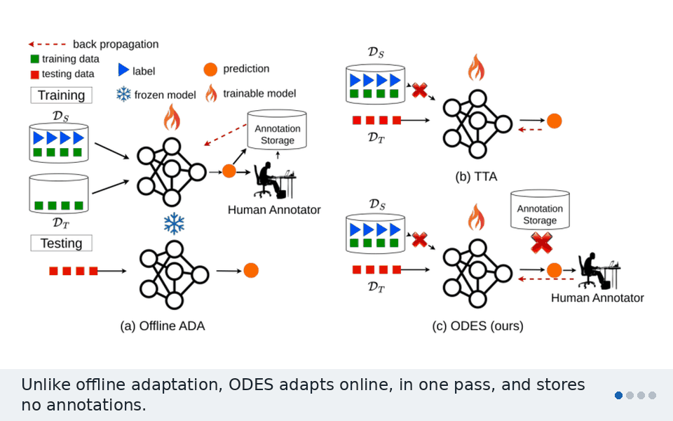
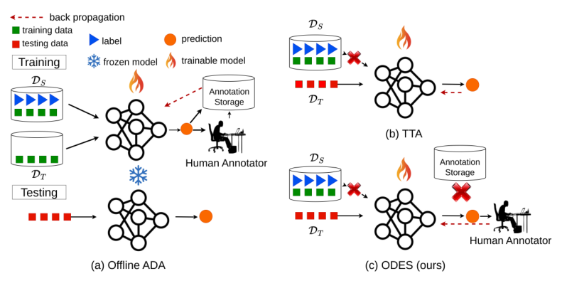
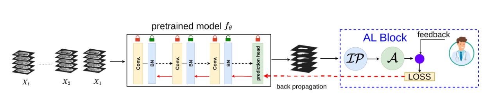
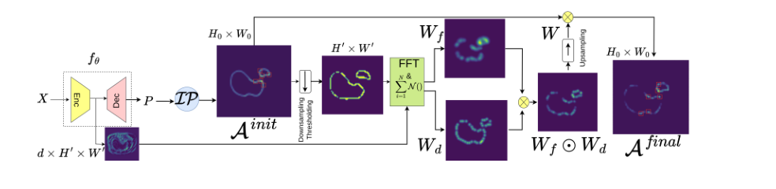
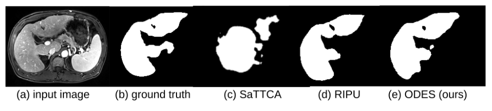

ODES
Online Domain Adaptation with Expert Guidance for Medical Image Segmentation
University of California, Riverside

A segmentation model trained on one scanner breaks on another. ODES fixes it on the fly, one batch of patients at a time. It asks an expert to label just 1% of the pixels, on the images and patches that matter most. It never sees the source data and stores nothing.
The problem
Medical segmentation models lose accuracy under domain shift. A new scanner, a new MRI contrast, or a new hospital is enough. In a clinic, patient scans arrive one after another, so the model has to adapt online. It sees each batch once and gets exactly one forward and backward pass.
Existing options each fall short:
- Unsupervised domain adaptation needs the labeled source data, which privacy rules often block, and a large offline target set.
- Test-time adaptation (TTA) works online, but it learns from the model's own pseudo-labels. These are noisy, and errors hurt most on small organs.
- Offline active domain adaptation adds expert labels, but it needs to store training data and annotations and run many passes.

ODES fits real clinical timing. The expert labels a few patches during the turnover time between two patients’ scans, so the workflow is not slowed down.
How ODES works
For every incoming batch, ODES runs an infer, acquire, update loop.

1Image pruning: label only the most shifted images
Not every image in a batch is equally shifted, so labeling all of them wastes the expert’s time. ODES compares each image’s batch-normalization statistics with the statistics stored from the source domain. Each image is lightly augmented (flips, small rotations, brightness changes). Then a KL divergence is computed between the source and target per-channel Gaussians across BN layers. Only the top K% most shifted images move on.
2Acquisition: find the uncertain, mixed regions
Within each kept image, ODES scores square patches with two signals:
- Uncertainty: the average pixel entropy of the prediction inside the patch.
- Regional impurity: how many classes are mixed inside the patch, which flags boundaries between organs.
Multiplying the two gives an initial acquisition map. On its own, though, it tends to pick many patches that sit next to each other and look alike.
3Diversity weighting: spread the labels out
ODES runs farthest-first traversal twice on the high-uncertainty points. The first pass spreads them out in image space (Euclidean distance). The second spreads them out in feature space (cosine distance). It places a Gaussian at each chosen point to build two weight maps and multiplies them. The final map is uncertainty × impurity × diversity weight. The expert labels the top b% of the image area from this map.

4Update: one quick pass
Only the batch-normalization layers are updated. The loss has two parts:
- A supervised cross-entropy loss on the expert-labeled patches.
- A continuity loss between neighboring MRI slices, since one volume changes smoothly from slice to slice.
Then the model moves on to the next patient.
Results
ODES was tested on three domain shifts:
- CHAOS T1 MRI, in-phase to out-of-phase (liver, both kidneys, spleen).
- CHAOS T2-SPIR to DUKE (liver).
- Prostate MRI from BMC to RUNMC.
The backbone is DeepLabv3, the annotation budget is 1% of pixels, and the metric is Dice.
Against online test-time adaptation
| Method | CHAOS IP→OOP (mean) | CHAOS→DUKE (liver) | BMC→RUNMC (prostate) |
|---|---|---|---|
| Source only | 52.99 | 26.28 | 65.32 |
| TENT | 67.30 | 46.64 | 71.02 |
| CoTTA | 67.10 | 52.58 | 73.87 |
| F-TTA | 70.13 | 48.29 | 73.18 |
| STTA | 67.13 | 53.36 | 73.51 |
| SaTTCA | 73.19 | 58.39 | 74.91 |
| TTAS | 69.41 | 49.39 | 72.81 |
| ODES (K = 100) | 78.61 | 71.65 | 79.34 |
| ODES (K = 50) | 78.56 | 70.16 | 78.36 |
| ODES (K = 10) | 76.80 | 66.11 | 77.47 |
Dice scores (%). K is the share of each batch kept after image pruning.
Labeling far fewer images costs little. On CHAOS→DUKE, keeping 50% of each batch instead of all of it drops Dice by only 1.49%. Keeping 10% drops it by 5.54%.
Against offline active domain adaptation
Offline methods such as RIPU and LabOR train with many passes over stored data. ODES gets one pass per batch, yet stays close to them. Its gap to LabOR is 2.79%, 1.06%, and 2.66% on the three shifts.

Code
The code is open source at github.com/ShazidAraf/ODES. It needs Python 3.8+, PyTorch 1.10+, OpenCV, NumPy, SciPy, and scikit-learn.
git clone https://github.com/ShazidAraf/ODES.git
cd ODES
python demo_ODES.py --cfg cfgs/example_config.yamlEdit the YAML config to point at your dataset and set K and the budget b.
Citation
@inproceedings{islam2025odes,
title = {ODES: Online Domain Adaptation with Expert Guidance for Medical Image Segmentation},
author = {Islam, Md Shazid and Nag, Sayak and Dutta, Arindam and Ahmed, Sk Miraj and
Niloy, Fahim Faisal and Bera, Shreyangshu and Roy-Chowdhury, Amit K.},
booktitle = {Medical Image Computing and Computer Assisted Intervention (MICCAI)},
year = {2025}
}This work was supported by the U.S. National Science Foundation under grants OAC-2411453 and DMS-2029814.